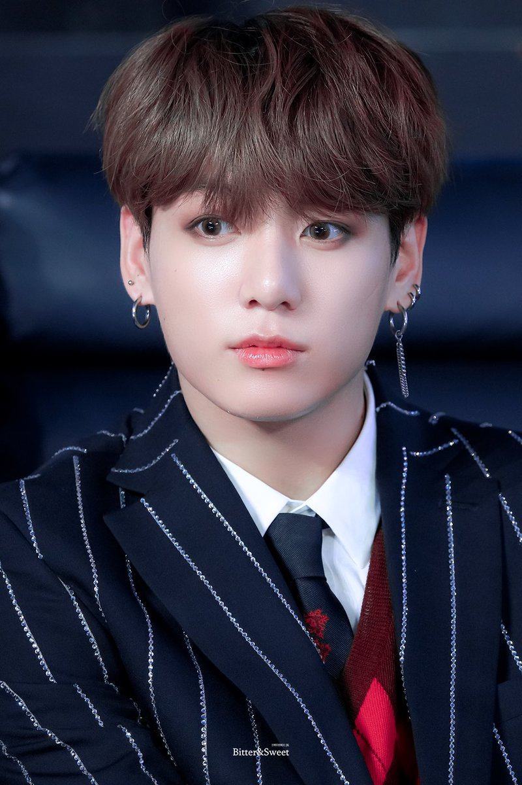

Born
Jeon Jung-kook
September 1, 1997 (age
Busan, South Korea
Occupation
Singer
Awards ROK Order of Cultural Merit Hwa-gwan (5th Class) ribbon.PNG Hwagwan Order of Cultural Merit (2018)
Musical career
K-popEDM[1]
Instruments Vocals
Years active 2013–present
Labels Big Hit
Associated acts
BTS
Korean name
Hangul 전정국
Hanja 田柾國
Revised Romanization Jeon Jeong-guk
McCune–Reischauer Chŏn Jŏngguk
Signature